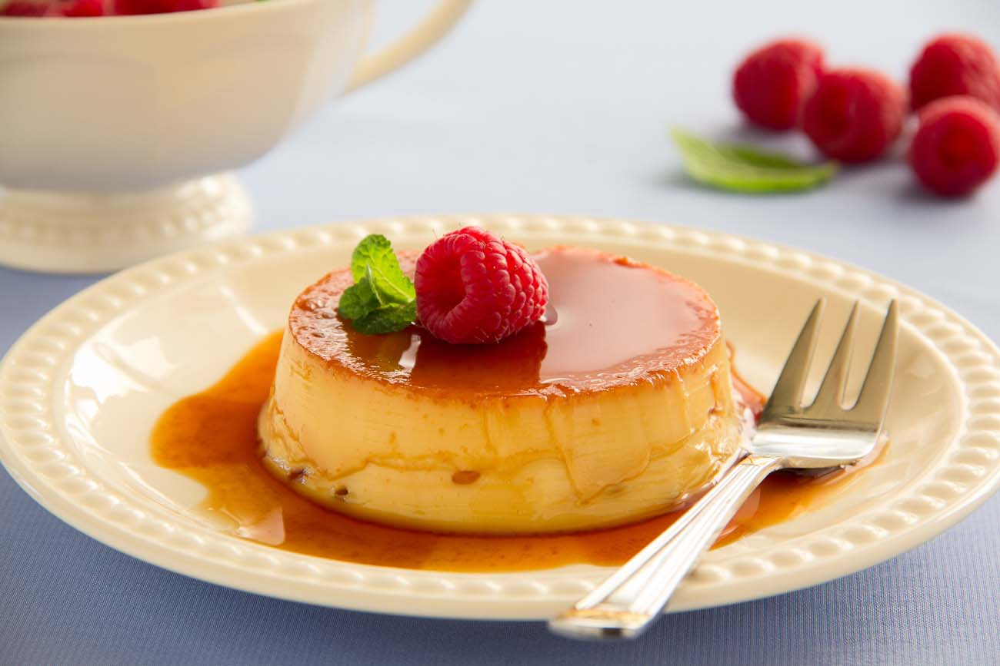

Kabobs

Description
A yummy, caramel-covered custard that's super-easy to make and fun for the whole family to eat!
Prep Time: 15 mins
Cook Time: 50 mins
Additional Time: 1 hr
Total Time: 2 hrs 5 mins
Servings: 4
Ingredients
- 1 tablespoon water
- ¼ cup white sugar
- 1 tablespoon hot water, or as needed
- 1 cup milk
- 5 tablespoons white sugar
- 2 eggs, beaten
How to Make Caramel Custard
- Preheat oven to 350 degrees F (175 degrees C).
- Mix 1 tablespoon water into 1/4 cup sugar in a heavy saucepan over medium heat until sugar is completely moistened. Bring to a boil, reduce heat to medium-low, and cook until the sugar and water form a golden brown syrup, about 5 minutes. Do not stir. Remove from heat and let boiling subside. Carefully stir 1 tablespoon hot water into caramel syrup.
- Whisk milk and 5 tablespoons sugar together in a saucepan over low heat; heat just until warmed and sugar has dissolved. Remove from heat and whisk eggs into milk mixture. Pour caramel syrup into an 8x8-inch baking dish. Pour egg-milk mixture over syrup. Place pan into a larger baking dish and pour enough water into outer pan to reach about 1/2 inch up the sides of the inner pan.
- Bake in the preheated oven until custard has set, about 45 minutes. Let cool for about 10 minutes; chill in refrigerator before serving.